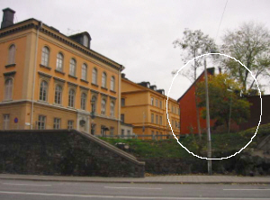
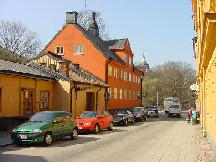
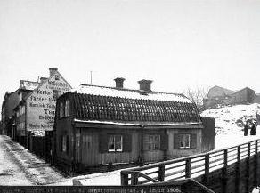
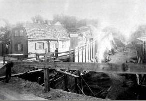

5-6. Fjällgatan 16-18
År 1880 bor 30 vuxna och 14 barn i nr 16. Lägenhetsinnehavarna har titlar som sjökapten, mamsell, arbetaränka, piga, gästgivardotter, fru, styrman, handelselev, f. d. sömmerska, handelsbokhållare, sjökaptensänka, cigarrarbetare, sjöman, järnarbetare, arbetskarl, minuthandlare och folkskolärarinna. Ur Ett berg vid vattnet, Per Anders Fogelström,1969 I Fjällgatan 16, ett relativt litet, rött stenhus från 1700-talet, bodde Fredrik Bergs far, dåvarande kateketen C. E. Berg, med familj. "Väl minns jag Andersons kryddbod på andra sidan gårdsporten och den kraftiga lukten av sill-lake", skriver Fredrik Berg. Diversehandlaren Anderson bodde också i huset på 1890-talet. Det köptes sedan avgrosshandlaren och konsuln E. W. Djurling som hade fabrik, kontor, bostad och detaljaffär där. Enligt John Landquist tillverkade Djurling leksaker - vilket antagligen är fel, då stora reklamtexter påhuset (enligt foto från 1906) uppger att företaget sålde färger, fernissa och tapeter. Djurling,"en vänlig donator till församlingen", var god vän med kyrkoherde Landquist i Katarina. Detvar Djurling som bekostade uppförandet av Sturemonumentet på Katarina kyrkogård (avtäckt1904), han skänkte också Katarina församling en av dess första barnkolonier, "Djurlingsö” utanför Spillersboda. Det var Djurling som tog initiativ till Stadsgårdshissens anläggning. År 1910 bor här 20 vuxna och fyra barn. Nu äger en grosshandlare halva huset och har kontor och stall här. Trädgården hyr han av staden. I övrigt finns det två pigor, en styrman, en possessionatsänka, en maskinist, en f.d. maskinist, en fabriksarbeterska, en baderska, en tidningsredaktör, en järn- och en byggnadsarbetare. År 1940 finns det 23 vuxna och 1 barn i huset. Titlarna ärtorghandlerska, diversearbetare, änkefru, sjukvårdare, mejeribiträde, vaktmästare, lagerbiträde, målare, bokbinderiarbeterska, maskinbiträde, sjöman, strykerska, modellsnickare, väverska, rörarbetare, plåslagare, filare, skriftställare, tobaksarbetare och f.d. rörarbetare. År 1970 har antalet boende minskat till 11 vuxna. Inga barn redovisas. En förste byråingenjör med maka hyr hela våningen 1 tr. upp. I övrigt finns här en konstnär, en cementarbetare, en målare, en kontorist och en köpman.  Ur Ett berg vid vattnet, Per Anders Fogelström, 1969 På Fjällgatans södra sida har det hus som stod närmast Renstiernasgatan, nummer 14, rivits.Det var ett litet trähus. Professor Fredrik Berg har berättat (i ett brev till PAF) att det var en liten krog eller möjligen ett kafe i huset omkring sekelskiftet, förmodligen drevs rörelsen av handlaren A. G.Vilund som ägde huset innan det köptes av staden.
|
Det lilla indragna trähuset vid nr 16 byggdes mellan 1723 och 1730. Den mellanliggande trädelen och stenhuset tillkom 1745, och vid samma tid bodlängan i västra tomtgränsen. Stenhuset på gården i östra tomtgränsen byggdes 1800. Trädgårdens södra del tillhörde ursprungligen de angränsande fastigheterna åt Stigbergsgatan men avstyckades därifrån 1824. Det lusthus som då fanns i södra tomtgränsen brändes ner i slutet av 1960-talet, men är rekonstruerat. Under 1890-talet fanns i stenhuset Andersons kryddbod och också en liten krog. År 1906 visar ett foto en reklamtext som uppger att ett företag med lokaler i huset säljer bl.a. färger, fernissor och tapeter. Gathuset nr 18 uppfördes 1730-35, gårdshuset 1764. Rester av 1700-talsinteriören finns bevarad. På gården finns ett litet lusthus. I de här trähusen bodde litet fattigare och enklare människor än i de större och finare stenhusen intill. Det låga huset till höger om porten kan förmodas vara uppfört före träbyggnadsförbudet 1736. Det förefaller inte att ha varit bostad. Huset var i dåligt skick beroende på en felaktig reparation under 1800-talet. Byggnaden har därför under 1997-1998 renoverats med användande av gamla arbetsmetoder och verktyg. Ruttna stockvarv har bytts ut mot kärnfuru från ett gammalt bjälklag.
 Ur Ett berg vid vattnet, Per Anders Fogelström, 1969 Trähuset intill, nummer 18 med träportal mot gatan, har en trevlig gård med ett litet lusthus. I arton bodde litet fattigare och enklaremänniskor än i de finare stenhusen intill, en målargesäll och en arbetare (utan närmare yrkesbenämning)upptas som ägare under slutet av förra seklet.
 Fjällgatan 14-16. Hörnet av Renstiernas Gata, år 1906. Närmast nr 14, därefter nr 16. Bilden tagen från väster.  Fjällgatan 14, Renstiernas Gata. Renstiernas Gata framspränges söderut från Fjällgatan. Till vänster Fjällgatan 14. Bilden tagen från norr. |

{kind=link}